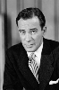
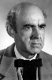

Country:United States, 79 minutes
Spoken languages:English
Genres:Adventure, Horror, Sci-Fi
Director(s):Jack Arnold
Writer(s):Harry Essex, Arthur A. Ross
Video Codec:Unknown
Number: 2703


Certification:NR
Storyline:
When scientists exploring the Amazon River stumble on a “missing link” connecting humans and fish, they plan to capture it for later study. But the Creature has plans of his own, and has set his sights on the lead scientist's beautiful fiancée, Kay.
Cast:  
Medium: Original DVD,
Comments: Part of: Universal Studios Classic Monster Collection
Loaned: No
Aspect ratio: Unknown